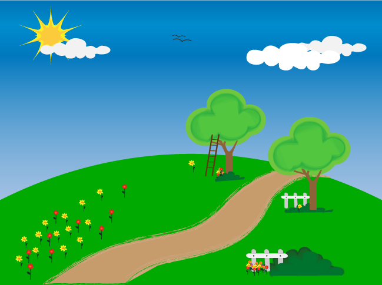

<div ng-init="on=false">
    
    
        <a style="position:absolute; top: 10px;"
           ui-sref="summer">Go to Summer</a>
        
        
    
        

        

        <div class="my-special-animation" ng-if="on">
            
        </div>                                                                                                
    </div>
    
</div>